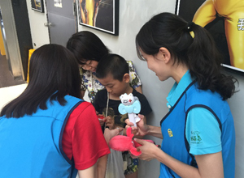
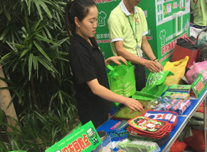

一心一益在东莞
青蚨东莞的小伙伴们积极参与到“依旧情深 点亮梦想”的活动中，活动现场，大家分享读书心得，推荐优秀的读本，现场很多朋友纷纷捐赠出自己喜欢的图书。


在支持绿色环保方面，青蚨东莞还开展各种路演活动，宣传节约用电、垃圾分类、旧衣捐赠等绿色环保项目。


青蚨东莞的小伙伴们积极参与到“依旧情深 点亮梦想”的活动中，活动现场，大家分享读书心得，推荐优秀的读本，现场很多朋友纷纷捐赠出自己喜欢的图书。
在支持绿色环保方面，青蚨东莞还开展各种路演活动，宣传节约用电、垃圾分类、旧衣捐赠等绿色环保项目。